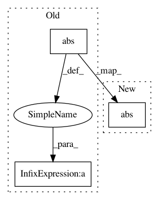

055c61d73514d471158ee36b83762802c8d4e3d4,lib/loss/clipped_weighted_huber_loss.py,ClippedWeightedHuberLoss,forward,#ClippedWeightedHuberLoss#,22
Before Change
self.diff = (x0_c - x1_c) * self.weight
y = xp.square(self.diff)
mask = y > (self.delta ** 2)
y -= mask * xp.square(abs(self.diff) - self.delta)
y *= 0.5
return xp.array(y.sum() / y.dtype.type(y.size), dtype=y.dtype),
def backward(self, inputs, gy):
After Change
x1_c = xp.clip(x1, self.clip[0], self.clip[1])
self.diff = (x0_c - x1_c) * self.weight
diff = xp.abs(self.diff)
y = xp.square(diff)
diff -= diff.dtype.type(self.delta)
xp.maximum(diff, 0, dtype=diff.dtype, out=diff)
xp.square(diff, out=diff)
In pattern: SUPERPATTERN
Frequency: 3
Non-data size: 3
Instances
Project Name: tsurumeso/waifu2x-chainer
Commit Name: 055c61d73514d471158ee36b83762802c8d4e3d4
Time: 2018-07-14
Author: tsurumeso@gmail.com
File Name: lib/loss/clipped_weighted_huber_loss.py
Class Name: ClippedWeightedHuberLoss
Method Name: forward
Project Name: pierluigiferrari/ssd_keras
Commit Name: d533214900cea56a4ec0be87577e97d3807b6bc5
Time: 2017-04-06
Author: pierluigi.ferrari@gmx.com
File Name: keras_ssd_loss.py
Class Name: SSD_Loss
Method Name: smooth_L1_loss
Project Name: microsoft/nni
Commit Name: c7d58033db0e25736d33406ed262cb5232d366e8
Time: 2020-02-09
Author: 38930155+chicm-ms@users.noreply.github.com
File Name: src/sdk/pynni/nni/compression/torch/pruners.py
Class Name: AGP_Pruner
Method Name: calc_mask